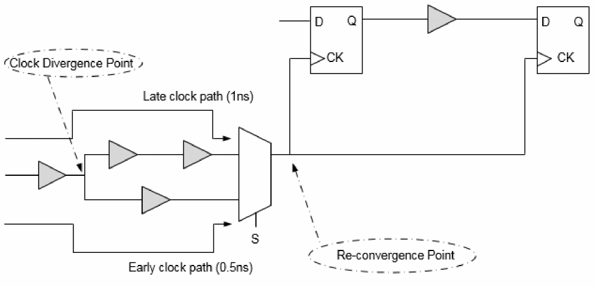

Clock Path Pessimism Removal
Clock Path Pessimism Removal (CPPR) is the process of identifying and removing pessimism introduced in slack reports for clock paths when launch and capture clock paths have a segment in common.
You can introduce early or late delay variations by using the set_analysis_mode -analysisType onChipVariation command or by using the set_timing_derate command for early and late clock paths. In CPPR calculations, the difference between late and early delays (for the common clock segment between launch and capture clock path) is calculated first and then this number is adjusted in the slack calculations to remove the pessimism, which existed because of considering common clock path to be both late and early at the same time. To remove this pessimism in propagated clock mode, you can use the following command:
set_analysis_mode -cppr true
Consider the following figure for setup check between flops FF1 and FF2.

The setup check equation for the example in the figure above with pessimism (without CPPR) is as follows:
t1max + t2max + t3max <= t4min + tcp - tsu
where tcp is the clock period and tsu is the setup requirement at D pin of flip-flop FF2.
The above setup check equation incorrectly implies that the common clock network, B1, can simultaneously use maximum delay for the launch clock late path (clock source to FF1/CLK) and minimum delay for the capture clock early path (clock source to FF2/CLK). Using the CPPR to remove this pessimism, the setup check equation is as follows:
t1max + t2max + t3max <= t4min + tcp - tsu + tcppr
where tcppr is the difference in the maximum and minimum delay from the clock source to the branching node.
Similarly, hold check equation using CPPR is as follows:
t1min + t2min + t3min + tcppr <= t4max + tH
where tH is the hold requirement at D pin of flop FF2.
Clock Re-convergence and CPPR
If a design contains re-convergent logic on the clock path, then the timing analysis software might assume certain pessimism while calculating slack. The following figure shows a circuit in which timing analysis is performed in single analysis mode.
Figure -66 Illustration of Clock Re-convergence

In this case, if the set_case_analysis command has not been set at point S of the multiplexer, the timing analysis software will assume different delay values for early and late paths. For example, if common early clock path from the clock source to the common clock point has a delay of 0.5ns, and the same common late clock path has delay of 1ns, then a pessimism equal to 0.5ns is introduced in the design. The above pessimism is not specific to single analysis mode only; it also applies to best-case/worst-case and on-chip variation methodologies. You can use CPPR to remove pessimism introduced due to re-convergence.
Supported CPPR Global Variables
The Tempus software uses multiple global variables to control CPPR behavior. These can be changed based on the user requirements. When these global variables are changed, there can be changes in common clock path pessimism removal in terms of accuracy, common point selection, SI behavior, and so on.
Some of these global variables include:
- timing_cppr_remove_clock_to_data_crp
- timing_cppr_self_loop_mode
- timing_cppr_skip_clock_reconvergence
- timing_cppr_threshold_ps
- timing_cppr_transition_sense
- timing_enable_pessimistic_cppr_for_reconvergent_clock_paths
- timing_enable_si_cppr
- timing_cppr_opposite_edge_mean_scale_factor
- timing_cppr_opposite_edge_sigma_scale_factor
Tempus uses a default threshold of 20ps during pessimism removal. This means that 20ps of uncertainty remains in the analysis. To set the threshold value you can use the timing_cppr_threshold_ps global variable. When you set this global variable to a specified value, all the paths may be reported without having pessimism removed by the given value of the global variable. During SI analysis, the CPPR behavior for setup and hold checks can be controlled by setting the timing_enable_si_cppr global variable.
Timing Analysis Results Before and After CPPR
The following example shows a full clock path timing report generated before CPPR analysis. The timing slack is 7.388 without any CPPR adjustments:
Path 1: MET Setup Check with Pin ff2/CK
Endpoint: ff2/D (v) checked with leading edge of 'clk'
Beginpoint: ff1/Q (v) triggered by leading edge of 'clk'
Path Groups: {clk}
Other End Arrival Time 0.972
- Setup 0.335
+ Phase Shift 10.000
= Required Time 10.637
- Arrival Time 3.249
= Slack Time 7.388
Clock Rise Edge 0.000
= Beginpoint Arrival Time 0.000
Timing Path:
-------------------------------------------------------------------
Instance Cell Arc Delay Arrival Required
Time Time
-------------------------------------------------------------------
clk ^ 0.000 7.388
c1 CLKBUFX1 A ^ -> Y ^ 0.312 0.312 7.700
c2 CLKBUFX1 A ^ -> Y ^ 0.343 0.655 8.042
c3 CLKBUFX1 A ^ -> Y ^ 0.175 0.829 8.217
c4 CLKBUFX1 A ^ -> Y ^ 0.126 0.956 8.343
c5 CLKBUFX1 A ^ -> Y ^ 0.152 1.108 8.496
mux1 MX2X1 B ^ -> Y ^ 0.211 1.319 8.706
cp11 CLKBUFX1 A ^ -> Y ^ 0.146 1.465 8.852
cp12 CLKBUFX1 A ^ -> Y ^ 0.131 1.596 8.983
cp13 CLKBUFX1 A ^ -> Y ^ 0.157 1.752 9.140
ff1 DFFHQX1 CK ^ -> Q v 0.422 2.175 9.562
u2 BUFX1 A v -> Y v 0.309 2.483 9.871
u4 BUFX1 A v -> Y v 0.279 2.762 10.150
u5 BUFX1 A v -> Y v 0.258 3.020 10.408
u6 BUFX1 A v -> Y v 0.228 3.248 10.636
ff2 DFFHQX1 D v 0.001 3.249 10.637
-------------------------------------------------------------------
Clock Rise Edge 0.000
= Beginpoint Arrival Time 0.000
Other End Path:
--------------------------------------------------------------------
Instance Cell Arc Delay Arrival Required
Time Time
--------------------------------------------------------------------
clk ^ 0.000 -7.388
c1 CLKBUFX1 A ^ -> Y ^ 0.124 0.124 -7.264
c2 CLKBUFX1 A ^ -> Y ^ 0.160 0.284 -7.103
cp21 CLKBUFX1 A ^ -> Y ^ 0.150 0.434 -6.954
cp22 CLKBUFX1 A ^ -> Y ^ 0.133 0.566 -6.821
cp23 CLKBUFX1 A ^ -> Y ^ 0.120 0.687 -6.701
cp24 CLKBUFX1 A ^ -> Y ^ 0.112 0.799 -6.589
cp25 CLKBUFX1 A ^ -> Y ^ 0.093 0.891 -6.496
cp26 CLKBUFX1 A ^ -> Y ^ 0.081 0.972 -6.416
ff2 DFFHQX1 CK ^ 0.000 0.972 -6.416
---------------------------------------------------------------------
When CPPR adjustment is made, the timing slack improvement is seen as pessimism and is displayed as “CPPR Adjustment” in the timing report.
In the example given below, “c2” is a common clock point after which the clock diverges:
Path 1: MET Setup Check with Pin ff2/CK
Endpoint: ff2/D (v) checked with leading edge of 'clk'
Beginpoint: ff1/Q (v) triggered by leading edge of 'clk'
Path Groups: {clk}
Other End Arrival Time 0.972
- Setup 0.335
+ Phase Shift 10.000
+ CPPR Adjustment 0.370
= Required Time 11.008
- Arrival Time 3.249
= Slack Time 7.758
Clock Rise Edge 0.000
= Beginpoint Arrival Time 0.000
Timing Path:
---------------------------------------------------------------------
Instance Cell Arc Delay Arrival Required
Time Time
---------------------------------------------------------------------
clk ^ 0.000 7.758
c1 CLKBUFX1 A ^ -> Y ^ 0.312 0.312 8.070
c2 CLKBUFX1 A ^ -> Y ^ 0.343 0.655 8.413
c3 CLKBUFX1 A ^ -> Y ^ 0.175 0.829 8.588
c4 CLKBUFX1 A ^ -> Y ^ 0.126 0.956 8.714
c5 CLKBUFX1 A ^ -> Y ^ 0.152 1.108 8.866
mux1 MX2X1 B ^ -> Y ^ 0.211 1.319 9.077
cp11 CLKBUFX1 A ^ -> Y ^ 0.146 1.465 9.223
cp12 CLKBUFX1 A ^ -> Y ^ 0.131 1.596 9.354
cp13 CLKBUFX1 A ^ -> Y ^ 0.157 1.752 9.511
ff1 DFFHQX1 CK ^ -> Q v 0.422 2.175 9.933
u2 BUFX1 A v -> Y v 0.309 2.483 10.242
u4 BUFX1 A v -> Y v 0.279 2.762 10.520
u5 BUFX1 A v -> Y v 0.258 3.020 10.778
u6 BUFX1 A v -> Y v 0.228 3.248 11.007
ff2 DFFHQX1 D v 0.001 3.249 11.008
--------------------------------------------------------------------
Clock Rise Edge 0.000
= Beginpoint Arrival Time 0.000
Other End Path:
----------------------------------------------------------------------
Instance Cell Arc Delay Arrival Required
Time Time
---------------------------------------------------------------------
clk ^ 0.000 -7.758
c1 CLKBUFX1 A ^ -> Y ^ 0.124 0.124 -7.634
c2 CLKBUFX1 A ^ -> Y ^ 0.160 0.284 -7.474
cp21 CLKBUFX1 A ^ -> Y ^ 0.150 0.434 -7.325
cp22 CLKBUFX1 A ^ -> Y ^ 0.133 0.566 -7.192
cp23 CLKBUFX1 A ^ -> Y ^ 0.120 0.687 -7.072
cp24 CLKBUFX1 A ^ -> Y ^ 0.112 0.799 -6.960
cp25 CLKBUFX1 A ^ -> Y ^ 0.093 0.891 -6.867
cp26 CLKBUFX1 A ^ -> Y ^ 0.081 0.972 -6.786
ff2 DFFHQX1 CK ^ 0.000 0.972 -6.786
--------------------------------------------------------------------
Return to top